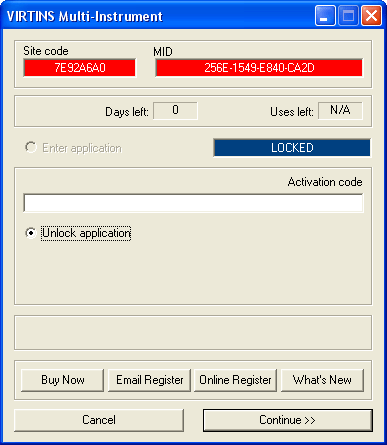

Thank you for taking time to fill out this form. Your request has been sent and will be processed as soon as possible within 24 hours.
After successful installation of the software, you should run it in order to obtain the Site code and MID (Machine ID) values for your computer. We need these codes to calculate the Activation Code (softkey) for you. When you launch the trial software, an activation dialog box will pop-up. The Site Code and MID of your computer will be displayed in this dialog box.
You can use the Activation Code Request Form above or simply click the "Email Register" button in the above dialog to submit your Site Code and MID.
Please note a new Activation Code will be given for free ONLY if you provide either of the following:
1. The new Site Code and MID from the LICENSED computer (applicable to the case of system recovery after hardware replacement and the like). Please indicate the replaced hardware (e.g. hard
disk, CPU, main board ...), if any, when you submit your request.
2. The Removal Code from the LICENSED computer together with the Site Code and MID from the new computer. (applicable to the case of license transfer)
Method 1: Request for license transfer (recommended)
Remove the license from the original computer and send the Removal Code together with the Site Code and MID from the new computer to us to request for a new activation code.
To remove the license, turn on the "Scroll Lock" key (or press and hold the "Shift" key) on your keyboard and then run the software. The activation dialog box will be displayed. Choose "Remove
License", enter the previously issued "Activation Code" in the "Activation Code" field, and press "Continue >>" button and confirm. The "Remove Code" will be displayed to you. Be sure to write
down the Removal Code.
Method 2: Do-It-Yourself (only valid if the software versions on both computers are the same)
The procedure is as follows: (Suppose that the license to be transferred from Computer A to Computer B)
(i) On Computer B, install and run the software in order to obtain the Site Code B.
(ii) On Computer A, turn on the "Scroll Lock" key (or press and hold the "Shift" key) on your keyboard and run the software. The activation dialog box will be displayed. Choose "Transfer
License", Enter the previously issued "Activation Code A" in the "Activation Code" field, and enter "Site Code B" in the "New Site Code" field, and press "Continue >>" button and confirm. The
"Activation Code" for Computer B will be displayed to you.
(iii) On Computer B, enter the "Activation Code B" to unlock the software. Write down and keep the "Activation Code B", because you need it for license transfer or license removal next time.
After you purchase an upgrade package, you should submit the Next Site code and the Next MID values from the LICENSED computer to us, we will generate the corresponding new Activation Code and
send it to you afterwards. You can then use the new Activation Code to extend your license.
To obtain the Next Site code and the Next MID of your licensed computer, turn on the
"Scroll Lock" key (or press and hold the "Shift" key) on your keyboard and then run the software, the activation dialog box will be displayed. Choose "Extend License", the Next Site code and
the Next MID will be displayed.
To extend the license, turn on the "Scroll Lock" key (or press and hold the "Shift" key) on your keyboard and then run the software, the activation dialog box will be displayed. Choose "Extend License" and enter the newly issued "Activation Code" in the "Activation Code" field, and press "Continue >>" button.
Software upgrade for the same license level is always FREE, moreover, you do not need to apply for a new activation code again (unless otherwise stated explicitly with the new version/build).
Same for the case of hardkeys and hardware.
When a new version/build is available online, just uninstall your current version, and download and install the new version/build, the software will be AUTOMATICALLY activated to the level you
own. For more information, please refer to Software FREE Upgrade Notice.